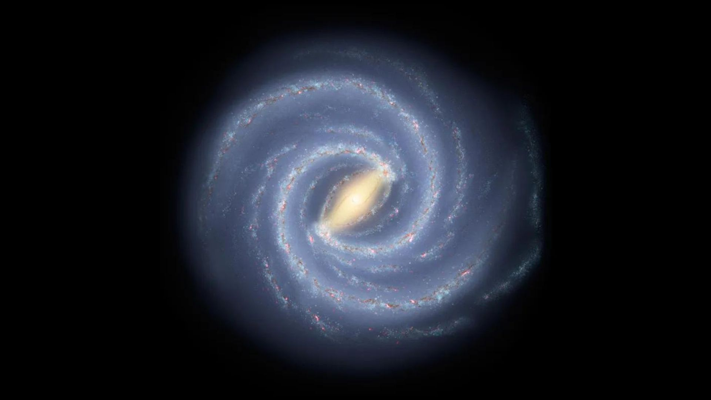

Welcome to the Milky Way
The Milky Way is the galaxy that contains our Solar System. It is made up of billions of stars, planets, gas, and dust.

About the Milky Way
The Milky Way is a spiral galaxy that contains our Solar System. It is estimated to be around 13.6 billion years old and is made up of hundreds of billions of stars. Our Sun is just one of these stars, located in a region known as the Orion Arm.
The galaxy also contains planets, gas, dust, and mysterious dark matter that helps hold everything together. At the centre of the Milky Way lies a supermassive black hole called Sagittarius A*, which has a mass millions of times greater than the Sun.
Scientists study the Milky Way to better understand how galaxies form and evolve. By observing stars and planets within it, we can learn more about our place in the universe and how our Solar System came to exist.
Galaxy Explorer
Type a planet name to see how long it takes to orbit the Sun.